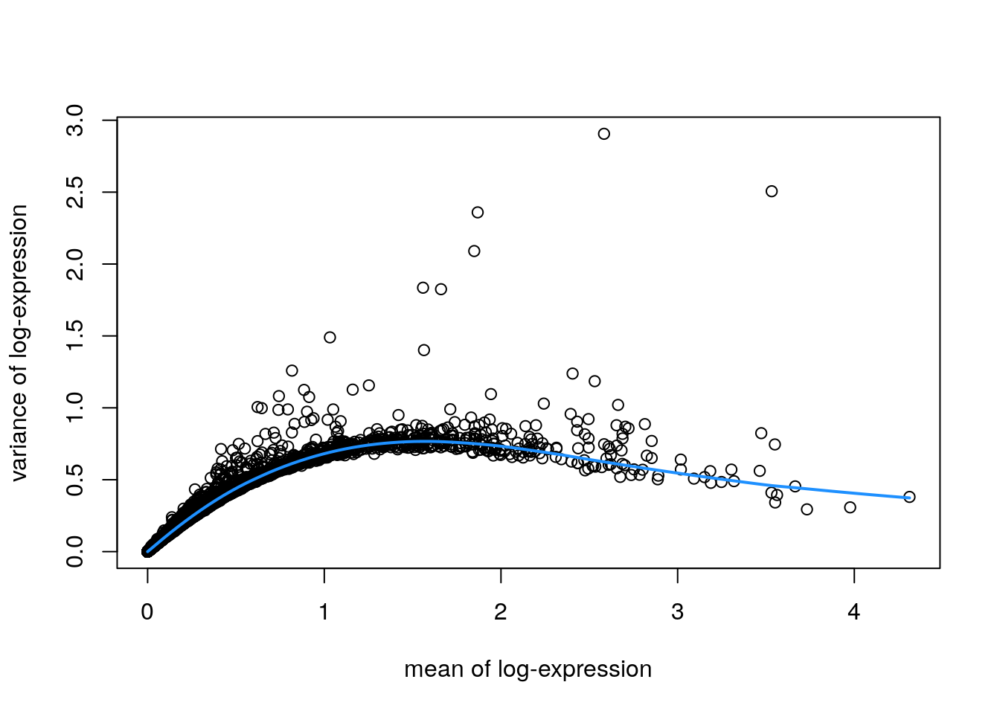
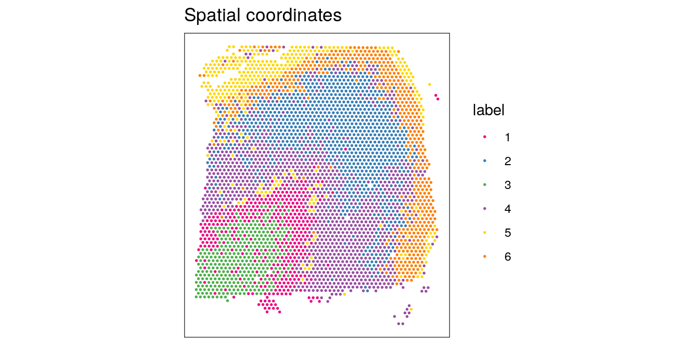
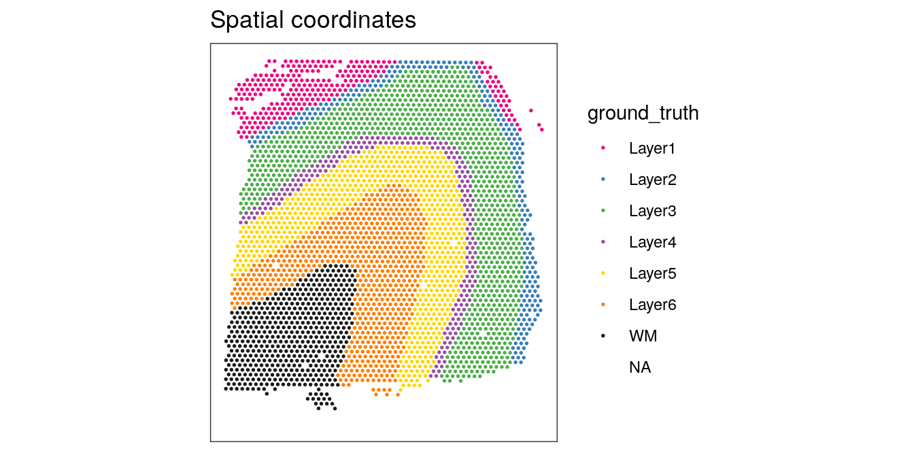
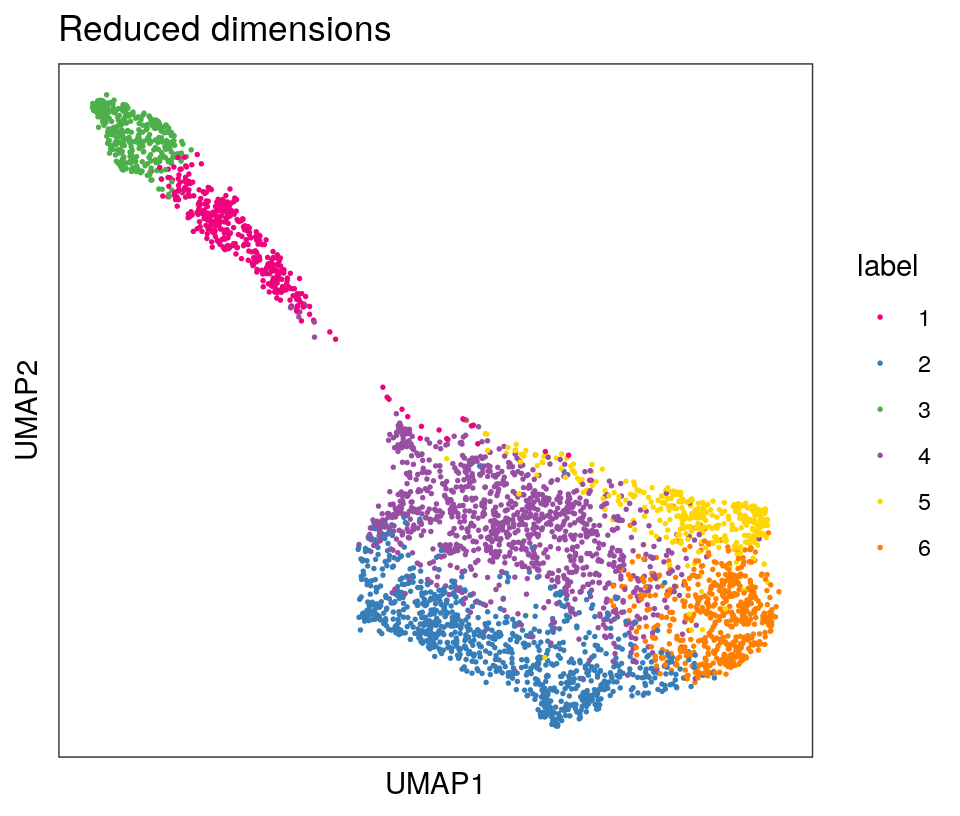

Chapter 16 Visium human DLPFC workflow
This workflow analyzes one sample of human brain from the dorsolateral prefrontal cortex (DLPFC) region, measured using the 10x Genomics Visium platform. This is a condensed version of the analyses shown in the individual analysis chapters in the previous part. For more details on the individual steps, see the previous chapters.
16.1 Description of dataset
This is a 10x Genomics Visium dataset generated from healthy human brain samples from the dorsolateral prefrontal cortex (DLPFC) region.
In the full dataset, there are 12 samples in total, from 3 individuals, with 2 pairs of “spatially adjacent” replicates (serial sections) per individual (4 samples per individual). The individuals and spatially adjacent replicates can be considered as blocking factors. Each sample spans the six layers of the cortex plus white matter in a perpendicular tissue section.
For the examples in this workflow and the analysis chapters, we use a single sample from this dataset (sample 151673), mainly to reduce computational requirements to compile the book.
This dataset is described in our publication Maynard et al. (2021). The full dataset is publicly available through the spatialLIBD Bioconductor package, and the analysis code from our paper is provided in the HumanPilot GitHub repository. The dataset can also be explored interactively through the spatialLIBD Shiny web app.
16.2 Load data
Here, we load a single sample from this dataset (sample 151673), which is available as a SpatialExperiment object from the STexampleData package.
library(SpatialExperiment)
library(STexampleData)
# load object
spe <- Visium_humanDLPFC()
spe## class: SpatialExperiment
## dim: 33538 4992
## metadata(0):
## assays(1): counts
## rownames(33538): ENSG00000243485 ENSG00000237613 ... ENSG00000277475
## ENSG00000268674
## rowData names(3): gene_id gene_name feature_type
## colnames(4992): AAACAACGAATAGTTC-1 AAACAAGTATCTCCCA-1 ...
## TTGTTTGTATTACACG-1 TTGTTTGTGTAAATTC-1
## colData names(3): cell_count ground_truth sample_id
## reducedDimNames(0):
## mainExpName: NULL
## altExpNames(0):
## spatialData names(6) : barcode_id in_tissue ... pxl_col_in_fullres
## pxl_row_in_fullres
## spatialCoords names(2) : x y
## imgData names(4): sample_id image_id data scaleFactor16.3 Plot data
As an initial check, plot the spatial coordinates (spots) in x-y dimensions on the tissue slide, to check that the object has loaded correctly and that the orientation is as expected.
We use visualization functions from the ggspavis package to generate plots.
library(ggspavis)# plot spatial coordinates (spots)
plotSpots(spe)
16.4 Quality control (QC)
First, we subset the object to keep only spots over tissue. The remaining spots are background spots, which we are not interested in.
# subset to keep only spots over tissue
spe <- spe[, spatialData(spe)$in_tissue == 1]
dim(spe)## [1] 33538 3639Next, calculate spot-level QC metrics using the scater package (McCarthy et al. 2017), and store the QC metrics in colData. See Quality control for more details, including explanations of the QC metrics.
library(scater)# identify mitochondrial genes
is_mito <- grepl("(^MT-)|(^mt-)", rowData(spe)$gene_name)
table(is_mito)## is_mito
## FALSE TRUE
## 33525 13rowData(spe)$gene_name[is_mito]## [1] "MT-ND1" "MT-ND2" "MT-CO1" "MT-CO2" "MT-ATP8" "MT-ATP6" "MT-CO3"
## [8] "MT-ND3" "MT-ND4L" "MT-ND4" "MT-ND5" "MT-ND6" "MT-CYB"# calculate per-spot QC metrics and store in colData
spe <- addPerCellQC(spe, subsets = list(mito = is_mito))
head(colData(spe), 3)## DataFrame with 3 rows and 15 columns
## cell_count ground_truth sample_id barcode_id
## <integer> <factor> <character> <character>
## AAACAAGTATCTCCCA-1 6 Layer3 sample_151673 AAACAAGTATCTCCCA-1
## AAACAATCTACTAGCA-1 16 Layer1 sample_151673 AAACAATCTACTAGCA-1
## AAACACCAATAACTGC-1 5 WM sample_151673 AAACACCAATAACTGC-1
## in_tissue array_row array_col pxl_col_in_fullres
## <integer> <integer> <integer> <integer>
## AAACAAGTATCTCCCA-1 1 50 102 8468
## AAACAATCTACTAGCA-1 1 3 43 2807
## AAACACCAATAACTGC-1 1 59 19 9505
## pxl_row_in_fullres sum detected subsets_mito_sum
## <integer> <numeric> <numeric> <numeric>
## AAACAAGTATCTCCCA-1 9791 8458 3586 1407
## AAACAATCTACTAGCA-1 5769 1667 1150 204
## AAACACCAATAACTGC-1 4068 3769 1960 430
## subsets_mito_detected subsets_mito_percent total
## <numeric> <numeric> <numeric>
## AAACAAGTATCTCCCA-1 13 16.6351 8458
## AAACAATCTACTAGCA-1 11 12.2376 1667
## AAACACCAATAACTGC-1 13 11.4089 3769Select filtering thresholds for the QC metrics by examining distributions using histograms. For additional details, including further exploratory visualizations to select the thresholds, see Quality control. Here, we use relatively relaxed thresholds, since the additional exploratory visualizations showed that more stringent thresholds tended to remove groups of spots corresponding to biologically meaningful regions.
# histograms of QC metrics
par(mfrow = c(1, 4))
hist(colData(spe)$sum, xlab = "sum", main = "UMIs per spot")
hist(colData(spe)$detected, xlab = "detected", main = "Genes per spot")
hist(colData(spe)$subsets_mito_percent, xlab = "percent mitochondrial", main = "Percent mito UMIs")
hist(colData(spe)$cell_count, xlab = "number of cells", main = "No. cells per spot")
par(mfrow = c(1, 1))
# select QC thresholds
qc_lib_size <- colData(spe)$sum < 500
qc_detected <- colData(spe)$detected < 250
qc_mito <- colData(spe)$subsets_mito_percent > 30
qc_cell_count <- colData(spe)$cell_count > 12
# number of discarded spots for each metric
apply(cbind(qc_lib_size, qc_detected, qc_mito, qc_cell_count), 2, sum)## qc_lib_size qc_detected qc_mito qc_cell_count
## 7 5 3 47# combined set of discarded spots
discard <- qc_lib_size | qc_detected | qc_mito | qc_cell_count
table(discard)## discard
## FALSE TRUE
## 3582 57# store in object
colData(spe)$discard <- discardPlot the set of discarded spots in the spatial x-y coordinates, to confirm that the spatial distribution of the discarded spots does not correspond to any biologically meaningful regions, which would indicate that we are removing biologically informative spots.
# check spatial pattern of discarded spots
plotQC(spe, type = "spots", discard = "discard")
There is some concentration of discarded spots at the edge of the tissue region, which may be due to tissue damage. Importantly, the discarded spots do not correspond to any of the cortical layers of interest.
We filter out the low-quality spots from the object.
# filter low-quality spots
spe <- spe[, !colData(spe)$discard]
dim(spe)## [1] 33538 358216.5 Normalization
Calculate log-transformed normalized counts, using pool-based size factors and deconvolution to the spot level. We use normalization methods from scater (McCarthy et al. 2017) and scran (Lun, McCarthy, and Marioni 2016), by assuming that these methods can be applied by treating spots as equivalent to cells. Since we have a single sample, there are no blocking factors. For more details, see Normalization.
library(scran)# quick clustering for pool-based size factors
set.seed(123)
qclus <- quickCluster(spe)
table(qclus)## qclus
## 1 2 3 4 5 6 7 8 9 10
## 372 245 254 744 415 230 394 299 492 137# calculate size factors and store in object
spe <- computeSumFactors(spe, cluster = qclus)
summary(sizeFactors(spe))## Min. 1st Qu. Median Mean 3rd Qu. Max.
## 0.1334 0.6093 0.8844 1.0000 1.2852 4.2475hist(sizeFactors(spe), breaks = 20)
# calculate logcounts (log-transformed normalized counts) and store in object
spe <- logNormCounts(spe)
assayNames(spe)## [1] "counts" "logcounts"16.6 Feature selection
Identify a set of top highly variable genes (HVGs), which will be used to define cell types. We use methods from scran (Lun, McCarthy, and Marioni 2016), treating spots as equivalent to cells, and considering only molecular features (gene expression), as described in Feature selection. We also first filter out mitochondrial genes, since these are very highly expressed and not of biological interest here.
# remove mitochondrial genes
spe <- spe[!is_mito, ]
dim(spe)## [1] 33525 3582# fit mean-variance relationship
dec <- modelGeneVar(spe)
# visualize mean-variance relationship
fit <- metadata(dec)
plot(fit$mean, fit$var,
xlab = "mean of log-expression", ylab = "variance of log-expression")
curve(fit$trend(x), col = "dodgerblue", add = TRUE, lwd = 2)
# select top HVGs
top_hvgs <- getTopHVGs(dec, prop = 0.1)
length(top_hvgs)## [1] 144816.7 Dimensionality reduction
Run principal component analysis (PCA) to the set of top HVGs, and retain the top 50 principal components (PCs) for further downstream analyses. This is done both to reduce noise and to improve computational efficiency. We also run UMAP on the set of top 50 PCs and retain the top 2 UMAP components for visualization purposes.
We use the computationally efficient implementation of PCA available in scater (McCarthy et al. 2017), which uses randomization, and therefore requires setting a random seed for reproducibility.
# compute PCA
set.seed(123)
spe <- runPCA(spe, subset_row = top_hvgs)
reducedDimNames(spe)## [1] "PCA"dim(reducedDim(spe, "PCA"))## [1] 3582 50# compute UMAP on top 50 PCs
set.seed(123)
spe <- runUMAP(spe, dimred = "PCA")
reducedDimNames(spe)## [1] "PCA" "UMAP"dim(reducedDim(spe, "UMAP"))## [1] 3582 2# update column names for easier plotting
colnames(reducedDim(spe, "UMAP")) <- paste0("UMAP", 1:2)16.8 Clustering
Next, we perform clustering to define cell types. Here, we use molecular features (gene expression) only, as described in Clustering. We apply graph-based clustering using the Walktrap method implemented in scran (Lun, McCarthy, and Marioni 2016), applied to the top 50 PCs calculated on the set of top HVGs.
# graph-based clustering
set.seed(123)
k <- 10
g <- buildSNNGraph(spe, k = k, use.dimred = "PCA")
g_walk <- igraph::cluster_walktrap(g)
clus <- g_walk$membership
table(clus)## clus
## 1 2 3 4 5 6
## 372 916 342 1083 349 520# store cluster labels in column 'label' in colData
colLabels(spe) <- factor(clus)Visualize the clusters by plotting in (i) spatial (x-y) coordinates on the tissue slide, and (ii) UMAP dimensions.
From the visualizations, we can see that the clustering reproduces the known biological structure (cortical layers), although not perfectly. The clusters are also separated in UMAP space, but again not perfectly.
# plot clusters in spatial x-y coordinates
plotSpots(spe, annotate = "label",
palette = "libd_layer_colors")
# plot ground truth labels in spatial coordinates
plotSpots(spe, annotate = "ground_truth",
palette = "libd_layer_colors")## Warning: Removed 14 rows containing missing values (geom_point).
# plot clusters in UMAP reduced dimensions
plotDimRed(spe, type = "UMAP",
annotate = "label", palette = "libd_layer_colors")
16.9 Marker genes
Identify marker genes by testing for differential gene expression between clusters. We use the findMarkers implementation in scran (Lun, McCarthy, and Marioni 2016), using a binomial test, which tests for genes that differ in the proportion expressed vs. not expressed between clusters. This is a more stringent test than the default t-tests, and tends to select genes that are easier to interpret and validate experimentally.
# set gene names as row names for easier plotting
rownames(spe) <- rowData(spe)$gene_name
# test for marker genes
markers <- findMarkers(spe, test = "binom", direction = "up")
# returns a list with one DataFrame per cluster
markers## List of length 6
## names(6): 1 2 3 4 5 6library(pheatmap)# plot log-fold changes for one cluster over all other clusters
# selecting cluster 1
interesting <- markers[[1]]
best_set <- interesting[interesting$Top <= 5, ]
logFCs <- getMarkerEffects(best_set)
pheatmap(logFCs, breaks = seq(-5, 5, length.out = 101))
# plot log-transformed normalized expression of top genes for one cluster
top_genes <- head(rownames(interesting))
plotExpression(spe, x = "label", features = top_genes)